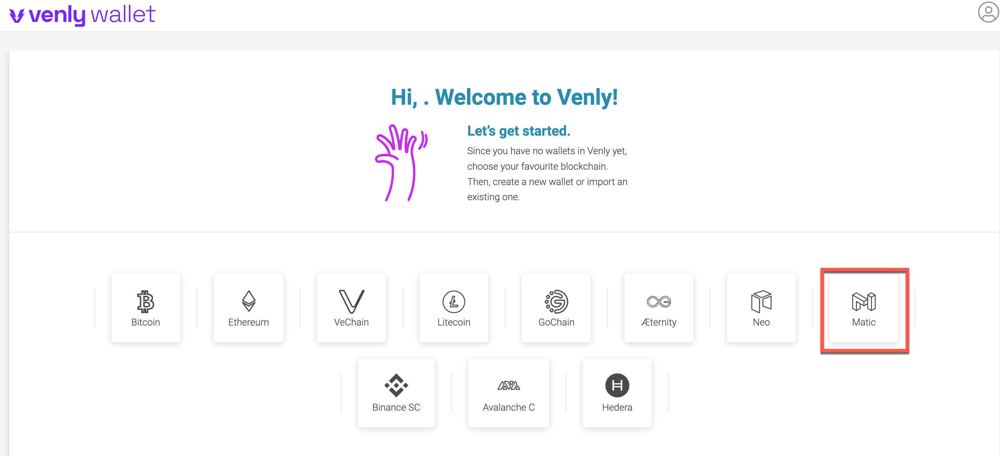

一、Venly钱包
1）登录 Venly 官网网站：
2
）登录个人钱包
- 如需输入pin码，请用户输入自己可以牢记的pin码数字后提交。
- 此PIN码将作为访问和操作您的钱包的密码钥匙，让用户已可安全访问钱包和处理交易
3）选择区块链类型

4）获取个人钱包地址，转移NFT收藏品到个人钱包：
- 其中Address：为个人钱包地址，可将NFT转移此钱包地址。
5）查看自动导入的NFT
- 点击NFT tab，如果有其它方将NFT转到个人钱包，钱包可以自动导入NFT并查看收藏品（如果遇到图片加载不出来情况，请稍后10min后再进行访问即可）
二、Coinbase钱包
1）打开chrome浏览器相关插件
https://chrome.google.com/webstore/search/Coinbase
- 点击该插件添加至chrome，再点击浏览器地址栏右侧红框处按钮，点击进入Coinbase插件
2）登录钱包
- 如用户还没有钱包，可选择创建钱包：输入用户名，下一步；
- 如用户已有钱包，也可以直接通过助记词导入。
- 显示钱包助记词，需要用户进行备份；
- 用途：由于加密钱包地址较长，难以记忆等问题，钱包会支持助记词作为将来用户遗忘、或遗失钱包信息时，找回个人钱包的重要依据。
- 注：此时用户为保证安全，需要最好以纸质或其他物理保存方式进行助记词的妥善保存，一旦助记词丢失，将丢失钱包中所有的加密资产。
- 创建密码：此密码将作为用户登录钱包时的登录密码；
- 注：此密码与助记词不同，它只做登录使用，不能用于恢复钱包。
3）配置钱包网络
4）获取个人钱包地址，转移NFT收藏品到个人钱包
- 4.1 点击红框所指的下箭头(如果没有下箭头图标，请看4.2介绍)，会显示个人钱包地址页面，选择以太坊类型地址，点击后面的按钮可复制地址全文；
- 用户可将此地址作为接收地址，将NFT转移此钱包地址。
- 4.2 如果该钱包版本未显示下箭头，点击“加号”按钮，进入“添加加密货币页面”，再点击”从另一个钱包转移“，之后进入个人钱包地址页面。
5）查看自动导入的NFT
- 点击NFT tab，如果有其它方将NFT转到个人钱包，钱包可以自动导入NFT并查看收藏品（如果遇到图片加载不出来情况，请稍后30min后再进行访问即可）
- NFT转移到个人钱包后，展示需要一些时间延时，可以点击按钮刷新数据
三、MetaMask APP钱包
1）登录MetaMask APP钱包
2）设置网络：
- 点击切换钱包的网络，选择为刚配置好的Matic网络。
3）获取个人钱包地址，转移NFT收藏品到个人钱包
- 钱包表示红色位置为个人钱包地址，点击后可复制；
- 用户可将此钱包地址作为接收地址，将NFT转移此钱包地址。
4）在钱包中导入与展示NFT
- 如果钱包已经转入NFT收藏品，可以通过添加收藏品的方式，将已有的NFT进行展示：点击“收藏品 -->添加收藏品”
- 进入import NFT页面，输入转移到个人钱包的NFT信息：
- 在“地址”栏输入要导入NFT的对应智能合约地址，在“ID”栏输入该智能合约下生成输属于个人的NFT的ID；输入完毕后，点击“添加”。
导入成功，可展示NFT
- 稍后一段时间加载完毕后，可在个人钱包中的收藏品展示画廊中显示出NFT藏品信息